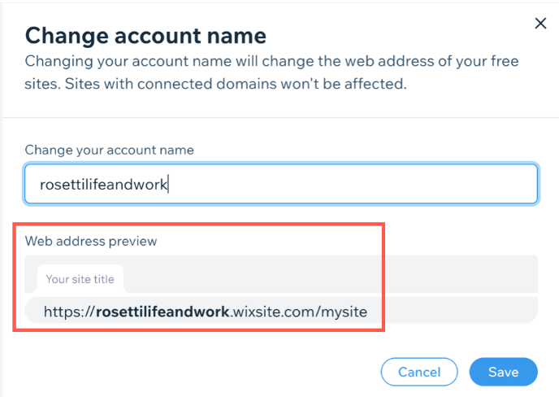

For a site to be published online, it needs to have a web address. A domain name is part of the unique, virtual address of a website, e.g.www.mystunningwebsite.com.
A domain name is made up of:
- A site name (for example, 'mystunningwebsite')
- A domain extension (for example, .com, .ie, .org etc.)
Together these parts make up the domain name 'mystunningwebsite.com'.
Personalize your free Wix URL
When you publish your site for the first time, your web address (i.e., URL) is in the following format: accountname.wixsite.com/siteaddress.
To make this more personalized, you can edit the free Wix URL:
- Account name: This is the account name of your Wix account. You can edit your account name in your Account Settings.
- Site name: You enter your site name when saving your site for the first time. You can edit it in your site dashboard.

Purchase a custom domain from Wix
Purchase a unique domain name for your brand and business directly from Wix. This gives your site a more professional look and can make it easier to find. It can help build trust with customers and strengthen brand awareness.
Having a custom domain name also improves your SEO, which helps you get better placement in search engine results.
Another benefit of having your own domain is the ability to create your own business emails (e.g. mail@mystunningwebsite.com) and subdomains as well (e.g. blog.mystunningwebsite.com).
Connect a domain you own to your Wix site
Wix makes it easy for you to transfer a domain you already own between your Wix sites, or from another host into your Wix account:
- Connect a domain you own from another host to Wix. There are two ways to connect your domain to Wix - via name servers or via pointing. The method you use to connect your domain determines where the DNS (Domain Name System) records of your domain are hosted.
- Transfer a domain you own from another host to Wix. You can transfer a domain from its current host (or 'registrar') to Wix. This option lets you manage not only your domain and DNS records at Wix, but also your contact information and your registration payments.